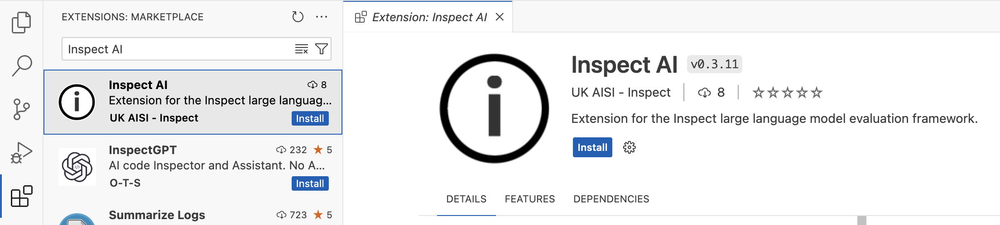
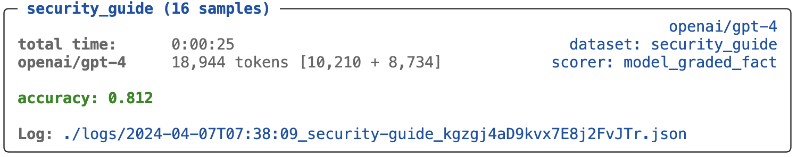

Log Viewer
Overview
Inspect View provides a convenient way to visualize evaluation logs, including drilling into message histories, scoring decisions, and additional metadata written to the log. Here’s what the main view of an evaluation log looks like:
{kind=link}
Below we’ll describe how to get the most out of using Inspect View.
Note that this section covers interactively exploring log files. You can also use the EvalLog API to compute on log files (e.g. to compare across runs or to more systematically traverse results). See the sections on Eval Logs and Data Frames to learn more about how to process log files with code.
VS Code Extension
If you are using Inspect within VS Code, the Inspect VS Code Extension has several features for integrated log viewing. To install the extension, search for “Inspect AI” in the extensions marketplace panel within VS Code.

The Logs pane of the Inspect Activity Bar (displayed below at bottom left of the IDE) provides a listing of log files. When you select a log it is displayed in an editor pane using the Inspect log viewer:

Click the open folder button at the top of the logs pane to browse any directory, local or remote (e.g. for logs on Amazon S3):


Links to evaluation logs are also displayed at the bottom of every task result:

If you prefer not to browse and view logs using the logs pane, you can also use the Inspect: Inspect View… command to open up a new pane running inspect view.
View Command
If you are not using VS Code, you can also run Inspect View directly from the command line via the inspect view command:
$ inspect viewBy default, inspect view will use the configured log directory of the environment it is run from (e.g. ./logs). You can specify an alternate log directory using --log-dir ,for example:
$ inspect view --log-dir ./experiment-logsBy default it will run on port 7575 (and kill any existing inspect view using that port). If you want to run two instances of inspect view you can specify an alternate port:
$ inspect view --log-dir ./experiment-logs --port 6565You only need to run inspect view once at the beginning of a session (as it will automatically update to show new evaluations when they are run).
Log History
You can view and navigate between a history of all evals in the log directory using the menu at the top right:

Live View
Inspect View provides a live view into the status of your evaluation task. The main shows shows what samples have completed (along with incremental metric calculations) and the sample view (described below) let’s you follow sample transcripts and message history as events occur.
If you are running VS Code, you can click the View Log link within the task progress screen to access a live view of your task:

If you are running with the inspect view command-line then you can access logs for in-progress tasks using the Log History as described above.
S3 Logs
Multiple users can view live logs located on Amazon S3 (or any shared filesystem) by specifying an additional --log-shared option indicating that live log information should be written to the shared filesystem:
inspect eval ctf.py --log-sharedThis is required because the live log viewing feature relies on a local database of log events which is only visible on the machine where the evaluation is running. The --log-shared option specifies that the live log information should also be written to the shared filesystem. By default, this information is synced every 10 seconds. You can override this by passing a value to --log-shared:
inspect eval ctf.py --log-shared 30Sample Details
Click a sample to drill into its messages, scoring, and metadata.
Messages
The messages tab displays the message history. In this example we see that the model make two tool calls before answering (the final assistant message is not fully displayed for brevity):

Looking carefully at the message history (especially for agents or multi-turn solvers) is critically important for understanding how well your evaluation is constructed.
Scoring
The scoring tab shows additional details including the full input and full model explanation for answers:
{kind=link}
Metadata
The metadata tab shows additional data made available by solvers, tools, an scorers (in this case the web_search() tool records which URLs it visited to retrieve additional context):
{kind=link}
Scores and Answers
Reliable, high quality scoring is a critical component of every evaluation, and developing custom scorers that deliver this can be challenging. One major difficulty lies in the free form text nature of model output: we have a very specific target we are comparing against and we sometimes need to pick the answer out of a sea of text. Model graded output introduces another set of challenges entirely.
For comparison based scoring, scorers typically perform two core tasks:
- Extract the answer from the model’s output; and
- Compare the extracted answer to the target.
A scorer can fail to correctly score output at either of these steps. Failing to extract an answer entirely can occur (e.g. due to a regex that’s not quite flexible enough) and as can failing to correctly identify equivalent answers (e.g. thinking that “1,242” is different from “1242.00” or that “Yes.” is different than “yes”).
You can use the log viewer to catch and evaluate these sorts of issues. For example, here we can see that we were unable to extract answers for a couple of questions that were scored incorrect:
{kind=link}
It’s possible that these answers are legitimately incorrect. However it’s also possible that the correct answer is in the model’s output but just in a format we didn’t quite expect. In each case you’ll need to drill into the sample to investigate.
Answers don’t just appear magically, scorers need to produce them during scoring. The scorers built in to Inspect all do this, but when you create a custom scorer, you should be sure to always include an answer in the Score objects you return if you can. For example:
return Score(
value="C" if extracted == target.text else "I",
answer=extracted,
explanation=state.output.completion
)If we only return the value of “C” or “I” we’d lose the context of exactly what was being compared when the score was assigned.
Note there is also an explanation field: this is also important, as it allows you to view the entire context from which the answer was extracted from.
Filtering and Sorting
It’s often useful to filter log entries by score (for example, to investigate whether incorrect answers are due to scorer issues or are true negatives). Use the Scores picker to filter by specific scores:

By default, samples are ordered (with all samples for an epoch presented in sequence). However you can also order by score, or order by samples (so you see all of the results for a given sample across all epochs presented together). Use the Sort picker to control this:

Viewing by sample can be especially valuable for diagnosing the sources of inconsistency (and determining whether they are inherent or an artifact of the evaluation methodology). Above we can see that sample 1 is incorrect in epoch 1 because of issue the model had with forming a correct function call.
Python Logging
Beyond the standard information included an eval log file, you may want to do additional console logging to assist with developing and debugging. Inspect installs a log handler that displays logging output above eval progress as well as saves it into the evaluation log file.
If you use the recommend practice of the Python logging library for obtaining a logger your logs will interoperate well with Inspect. For example, here we developing a web search tool and want to log each time a query occurs:
# setup logger for this source file
logger = logging.getLogger(__name__)
# log each time we see a web query
logger.info(f"web query: {query}")All of these log entries will be included in the sample transcript.
Log Levels
The log levels and their applicability are described below (in increasing order of severity):
| Level | Description |
|---|---|
debug |
Detailed information, typically of interest only when diagnosing problems. |
trace |
Show trace messages for runtime actions (e.g. model calls, subprocess exec, etc.). |
http |
HTTP diagnostics including requests and response statuses |
info |
Confirmation that things are working as expected. |
warning |
or indicative of some problem in the near future (e.g. ‘disk space low’). The software is still working as expected. |
error |
Due to a more serious problem, the software has not been able to perform some function |
critical |
A serious error, indicating that the program itself may be unable to continue running. |
Default Levels
By default, messages of log level warning and higher are printed to the console, and messages of log level info and higher are included in the sample transcript. This enables you to include many calls to logger.info() in your code without having them show by default, while also making them available in the log viewer should you need them.
If you’d like to see ‘info’ messages in the console as well, use the --log-level info option:
$ inspect eval biology_qa.py --log-level info
You can use the --log-level-transcript option to control what level is written to the sample transcript:
$ inspect eval biology_qa.py --log-level-transcript httpNote that you can also set the log levels using the INSPECT_LOG_LEVEL and INSPECT_LOG_LEVEL_TRANSCRIPT environment variables (which are often included in a .env configuration file.
External File
In addition to seeing the Python logging activity at the end of an eval run in the log viewer, you can also arrange to have Python logger entries written to an external file. Set the INSPECT_PY_LOGGER_FILE environment variable to do this:
export INSPECT_PY_LOGGER_FILE=/tmp/inspect.logYou can set this in the shell or within your global .env file. By default, messages of level info and higher will be written to the log file. If you set your main --log-level lower than that (e.g. to http) then the log file will follow. To set a distinct log level for the file, set the INSPECT_PY_LOGGER_FILE environment variable. For example:
export INSPECT_PY_LOGGER_LEVEL=httpUse tail --follow to track the contents of the log file in realtime. For example:
tail --follow /tmp/inspect.logTask Information
The Info panel of the log viewer provides additional meta-information about evaluation tasks, including dataset, solver, and scorer details, git revision, and model token usage:
{kind=link}
Publishing
You can use the command inspect view bundle (or the bundle_log_dir() function from Python) to create a self contained directory with the log viewer and a set of logs for display. This directory can then be deployed to any static web server (GitHub Pages, S3 buckets, or Netlify, for example) to provide a standalone version of the viewer. For example, to bundle the logs directory to a directory named logs-www:
$ inspect view bundle --log-dir logs --output-dir logs-wwwOr to bundle the default log folder (read from INSPECT_LOG_DIR):
$ inspect view bundle --output-dir logs-wwwBy default, an existing output dir will NOT be overwritten. Specify the --overwrite option to remove and replace an existing output dir:
$ inspect view bundle --output-dir logs-www --overwriteBundling the viewer and logs will produce an output directory with the following structure:
logs-www
└── index.html
└── robots.txt
└── assets
└── ..
└── logs
└── ..- 1
- The root viewer HTML
- 2
- Excludes this site from being indexed
- 3
- Supporting assets for the viewer
- 4
- The logs to be displayed
Deploy this folder to a static webserver to publish the log viewer.
Other Notes
You may provide a default output directory for bundling the viewer in your
.envfile by setting theINSPECT_VIEW_BUNDLE_OUTPUT_DIRvariable.You may specify an S3 url as the target for bundled views. See the Amazon S3 section for additional information on configuring S3.
You can use the
inspect_ai.log.bundle_log_dirfunction in Python directly to bundle the viewer and logs into an output directory.The bundled viewer will show the first log file by default. You may link to the viewer to show a specific log file by including the
log_fileURL parameter, for example:https://logs.example.com?log_file=<log_file>The bundled output directory includes a
robots.txtfile to prevent indexing by web crawlers. If you deploy this folder outside of the root of your website then you would need to update your rootrobots.txtaccordingly to exclude the folder from indexing (this is required because web crawlers only readrobots.txtfrom the root of the website not subdirectories).The Inspect log viewer uses HTTP range requests to efficiently read the log files being served in the bundle. Please be sure to use a server which supports HTTP range requests to server the statically bundled files. Most HTTP servers do support this, but notably, Python’s built in
http.serverdoes not.